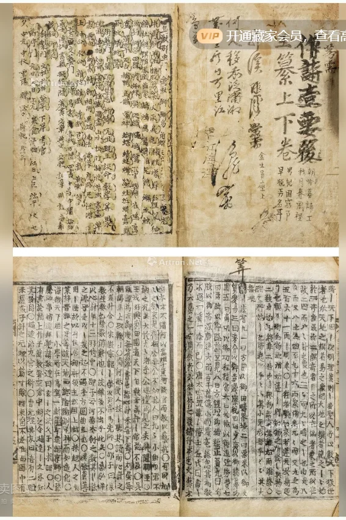

 点击图片可查看大图 · 原始图像 566×851 px 未提供 朝鲜瓢活字玉纂 —— 成交记录未提供 估价RMB 4,000 记录信息 拍卖日期2021-01-10 13:00 拍卖公司景星麟凤 拍卖专场大唐西市2020年秋季暨2021年迎新艺术品拍卖会 稽古游楮—古籍善本·金石碑帖专场（下） 创作年代原表未著录 开本26×19cm 尺寸类型开本 高 × 宽26.0 × 19.0 cm 纸张原表未著录 成交价原文无成交价（未提供） 来源位置Excel 第 13 行